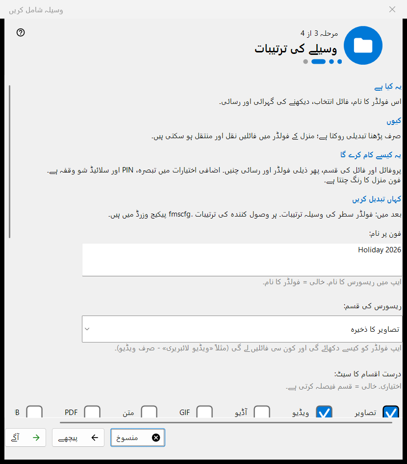
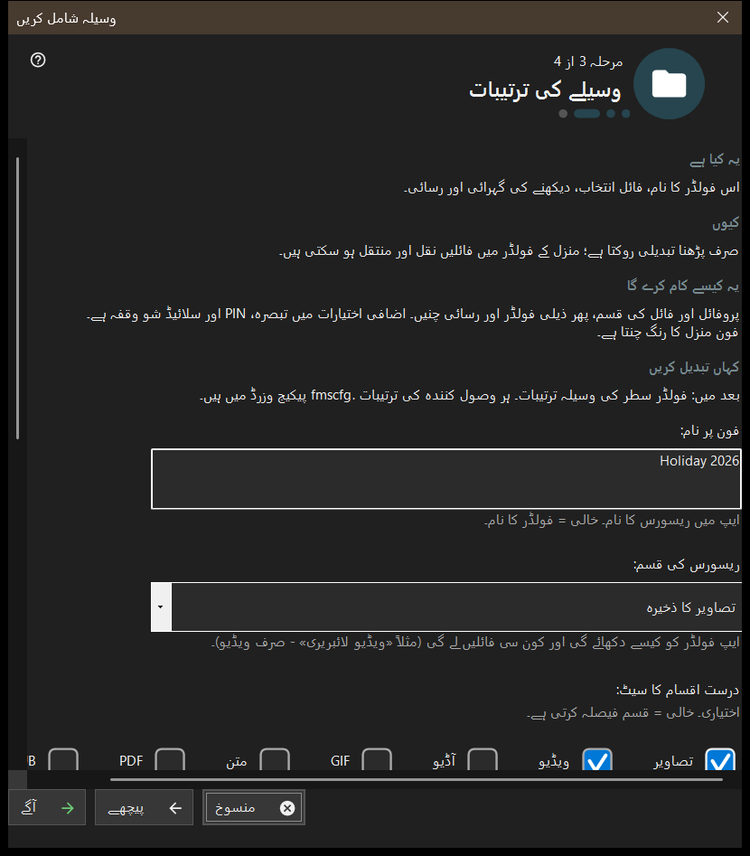

وسیلہ شامل کریں
یہ کس مقصد کے لیے ہے
ایک مختصر وزرڈ جو ایک شیئر کیا گیا وسیلہ شامل کرتا ہے: ایک فولڈر یا پہلے سے کھلی FileDO ڈسک۔ یہ شامل کریں مینو کی وسائل شامل کرنے کا وزرڈ.. شق سے اور پہلی بار چلانے کے بہاؤ سے کھلتا ہے، اور وسیلے کو شیئر کی فہرست میں شامل کرکے ختم ہوتا ہے۔


اس ترتیب میں
- پڑھیں کہ وسیلہ کیا ہے اور آگے دبائیں۔
- فولڈر منتخب کریں.. دبائیں اور فولڈر چنیں۔
- وسیلے کی ترتیبات کے صفحے پر نام، قسم اور رسائی طے کریں۔
- خلاصہ دیکھیں اور ختم دبائیں۔
- آخری صفحے کے بٹنوں سے QR کوڈ دکھائیں یا ترتیبات کھولیں۔
عناصر
وسیلہ کیا ہے
وسیلہ ایک فولڈر یا کھلی FileDO ورچوئل ڈسک ہے جس تک ویوور اس پی سی کے ذریعے پہنچتا ہے۔ فائلیں کمپیوٹر پر ہی رہتی ہیں؛ فون کنکشن کے ذریعے انہیں براؤز اور کاپی کرتا ہے، اور فہرست میں نشان والا فولڈر ہی پیش کیا جاتا ہے۔
فولڈر منتخب کرنا
فولڈر منتخب کریں.. معمول کا فولڈر انتخاب کنندہ کھولتا ہے اور FileDO ڈسکس.. کھلی ڈسکوں کی فہرست دیتا ہے۔ جو فولڈر پہلے سے فہرست میں ہو اسے اس پیغام کے ساتھ مسترد کیا جاتا ہے: یہ فولڈر پہلے ہی فہرست میں ہے۔ FileDO ڈسکیں وہی چنیں جو پہلے سے کھلی ہوں؛ وزرڈ انہیں نہ بناتا ہے نہ ماؤنٹ کرتا ہے۔
وسیلے کی ترتیبات
فون پر نام، قسم، درست میڈیا سیٹ، اسکین کی شرائط اور رسائی۔ صرف پڑھنے کے لیے تبدیلیاں روکتا ہے؛ منزل فولڈر میں فائلیں کاپی اور منتقل کی جا سکتی ہیں۔ اضافی اختیارات میں تبصرہ، PIN اور سلائیڈ شو کا وقفہ ہیں۔ منزل کا رنگ فون چنتا ہے۔
وسیلہ اور اگلے اقدامات
ختم ترتیبات محفوظ کرتا ہے اور وسیلہ شامل کرتا ہے؛ اس سے پہلے منسوخ کرنے پر کچھ نہیں بدلتا۔ آخری صفحہ بتاتا ہے کہ وسیلہ پیش کیا جا رہا ہے یا نہیں۔ سرور بند ہو تو فون اسے ابھی نہیں دیکھ سکتا؛ پیش کرنا تصدیق شدہ نہ ہو تو ترتیبات جانچیں۔ QR کوڈ دکھائیں رسائی کوڈ کھولتا ہے، ترتیبات.. مینیجر کی ترتیبات کھولتا ہے، بند کریں وزرڈ سے باہر نکلتا ہے۔
مینیجر کی ترتیبات · SFTP اشتراک کی ترتیبات · ایکسچینج سرور کی ترتیبات